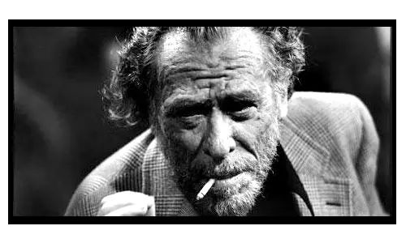

Charles Bukowski

El poema en imágenes: Cerveza (1977)
Charles Bukowski (1920–1994) fue un poeta y escritor estadounidense conocido por una obra marcada por la vida cotidiana, la soledad, el alcohol, el deseo y los márgenes de la sociedad. Su escritura, directa y sin demasiados adornos, convirtió escenas aparentemente insignificantes en materia poética.
En «Cerveza», Bukowski vuelve la mirada hacia uno de sus temas recurrentes: el alcohol como refugio, compañía y parte de la rutina. Con su lenguaje sencillo y desencantado, el poema transforma una acción tan cotidiana como beber una cerveza en una reflexión sobre la soledad y la experiencia de estar vivo.
La voz de Bukowski: Post Office (1971)

La voz de Charles Bokowski está estrechamente ligada a sus experiencias personales y a los personajes que creó a partir de ellas. En Post Office, su primera novela, publicada en 1971, sigue los años de Henry Chinaski trabajando para el servicio postal estadounidense, entre empleos, bares, apuestas, alcohol y relaciones personales. La novela tiene un marcado carácter autobiográfico y presenta muchos de los temas que atraviesan la obra del autor.
Escuchar su voz añade otra dimensión a su escritura: detrás de los versos aparece también el hombre que convirtió su propia vida cotidiana en materia literaria.